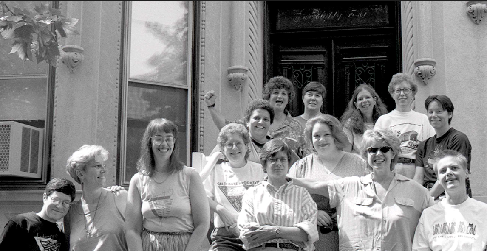

“The act of preserving history is an act of revolution.” -Deborah Edel (co-founder of the Lesbian Herstory Archives)
Address:
484 14th Street
Brooklyn, New York
Phone Number: 718-768-DYKE (3953)
Email:info@lesbianherstoryarchives.org
Website:lesbianherstoryarchives.org
It takes a moment, after you enter the limestone townhouse in Park Slope, Brooklyn, to realize what you’re seeing. You’ve just come inside, maybe you’ve hung your coat on the rack by the foyer, as if you’re here for a Sunday dinner or a game night. You probably glimpsed the painted leather jacket hanging in the hall that leads to the bathroom. Next to it, was that a black slip? But now you’re in the main room, a library bracketed on one end by a comfy-looking, brocade couch, and on the other opening to a quiet room with an oval wooden table, where probably people are working, archival boxes open next to them, probably headphoned since visitors come and go from the archives in a steady flow. Plus the kitchen is past the table, so folks are likely to be squeezing by. You’re noticing all this, plus the ready grin on the face of your guide, one of the founders of the archive. Your eyes rest on the titles of the books, the author names, take in the photographs—some seemingly professional, some snapshots---the paintings: and you realize that you are in a space that is entirely devoted to Lesbian life. Every single item is about, for and by the Lesbian community. The guide acknowledges your quiet, says that sometimes folks don’t say much during their first visit. She recounts how one visitor described the sensation of her visit as “sitting under a waterfall.”
The Herstory Archives were founded in the 1970’s, by Joan Nestle, Deborah Edel, Sahli Cavallo, Pamela Oline, and Julia Penelope Stanley (who were part of and branched off from the Gay Academic Union) in response to the realization that Lesbian history was “disappearing as quickly as it was being made.” Their mission has been to gather, preserve and facilitate easy access to their records so that future generations would have a resource for learning about their lives in the context of long lineage of Lesbian culture.
(A note here to highlight the Archive’s definition of the conception of Lesbian: “There is no room for hatred or bigotry at the Archives. We have always had, and continue to have, an expansive and inclusive understanding of Lesbian. We have worked to preserve for the future the complexity of who we were and who we are. We honor and stand on our history that has always included, and continues to include, lesbian women, butches, femmes, cross dressers, passing women, and those who are trans, two spirited, same-gender-loving, as well as others, all of whom at times were, and still can be, made to feel unwelcome in the world by others, sometimes even by other Lesbians. It is critically important to us that all—in the most diverse and expansive understanding of the complexity of who we are—feel accepted and welcomed at the Archives not disrespected or excluded. All have been and remain an important part of our community history, contributing to the building of our world. This has been the Lesbian Herstory Archives position since its inception and continues to be our position.”)
The archive has been in continual existence since its founding, expanding every year, with the largest collection of materials by creators who identify as lesbians. The collection includes materials from famous artists, such as Audre Lorde and Adrienne Rich, who have insisted on keeping some of their archives with Herstory. It also includes the intimacy of a love letter found on the street from one woman to her wife, enduring evidence of lesbian relationships from decades in which the public narrative insisted such relationships didn’t exist.
As the tour continues you’ll hear how Herstory sought to transform the archival space. The books, your guide points out, are alphabetized according to first name, not last. The scholars at the table have beverages with them, and are allowed to handle the materials themselves, with their bare hands. In the kitchen, people are eating. The mission, from the start, was to create a welcoming space for everyone who sought to know more of the histories in Herstory.
Eventually, you hear, the archive will need a new home, it’s outgrowing its beloved brownstone. And you get it, but you’re happy to, you’ve had the chance to see it here, the shelves overflowing and the couch occupied, and the halls lined with posters. You hear that people come from all over the world to experience this exact place and you get it. Upstairs, you pull an archival box, this one from the 1990s. It holds pristine editions of Bitch Magazine. You spread them on the table. You settle in.